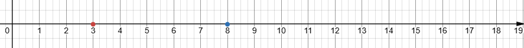

Οι φυσικοί αριθμοί αποτελούν το θεμελιώδες σύνολο αριθμών (\(\mathbb{N}\)) που χρησιμοποιείται για την καταμέτρηση αντικειμένων και διακρίνονται για τις εξής ιδιότητες και κανόνες διάταξης:
0.1 1. Ορισμός και Βασικά Χαρακτηριστικά
- Σύνολο: Περιλαμβάνει τους αριθμούς \(\{0, 1, 2, 3, \dots\}\). Κάθε αριθμός προκύπτει από τον προηγούμενό του με την προσθήκη μίας μονάδας.
- Άπειρο Σύνολο: Οι φυσικοί αριθμοί είναι άπειροι, καθώς δεν υπάρχει μέγιστος αριθμός· για κάθε \(n\) υπάρχει πάντα ο επόμενός του, \(n+1\).
- Ελάχιστο Στοιχείο: Το μηδέν (0) θεωρείται η αφετηρία της αριθμητικής ημιευθείας και το ελάχιστο στοιχείο του συνόλου.
- Διακριτός Χαρακτήρας: Μεταξύ δύο διαδοχικών φυσικών αριθμών \(n\) και \(n+1\) δεν παρεμβάλλεται κανένας άλλος φυσικός αριθμός.
0.2 2. Κανόνες Διάταξης και Σύγκρισης
Η διάταξη επιτρέπει τη σύγκριση οποιωνδήποτε δύο φυσικών αριθμών βάσει των παρακάτω κανόνων:
* Αρχή της Τριχοτομίας: Για κάθε ζεύγος αριθμών \(n, m\), ισχύει ακριβώς μία από τις σχέσεις: \(n = m\), \(n < m\) ή \(n > m\).
* Ορισμός Ανισότητας: Ο \(m\) είναι μικρότερος του \(n\) (\(m < n\)) αν υπάρχει ένας φυσικός αριθμός \(k \neq 0\) τέτοιος ώστε \(n = m + k\).
* Μεταβατική Ιδιότητα: Αν \(n < m\) και \(m < k\), τότε \(n < k\).
* Αντισυμμετρική Ιδιότητα: Αν \(m \le n\) και \(n \le m\), τότε αναγκαστικά \(m = n\).
* Αριθμητική Ημιευθεία: Οι αριθμοί διατάσσονται πάνω σε μια ημιευθεία ξεκινώντας από το 0 και προχωρώντας προς τα δεξιά. Όσο πιο δεξιά βρίσκεται ένας αριθμός, τόσο μεγαλύτερος είναι.
* Αρχή της Καλής Διάταξης: Κάθε μη κενό υποσύνολο των φυσικών αριθμών έχει ένα ελάχιστο στοιχείο.
0.3 3. Βασικές Πράξεις και Ιδιότητες
Οι φυσικοί αριθμοί διέπονται από συγκεκριμένες ιδιότητες κατά την εκτέλεση πράξεων:
* Πρόσθεση: Είναι πράξη κλειστή στο \(\mathbb{N}\).
Ισχύουν η αντιμεταθετική (\(a+\beta = \beta+a\)),
η προσεταιριστική \((a+\beta)+\gamma=a+(\beta+\gamma)\)
και το 0 ως ουδέτερο στοιχείο (\(a+0=a\)).
* Αφαίρεση: Είναι η αντίστροφη πράξη της πρόσθεσης.
Μπορεί να εκτελεστεί μόνο αν ο μειωτέος είναι μεγαλύτερος ή ίσος του αφαιρετέου (\(a \ge \beta\)).
* Πολλαπλασιασμός: Ισχύουν
η αντιμεταθετική, \(a\cdot\beta=\beta\cdot a\)
η προσεταιριστική \((a\cdot \beta) \cdot \gamma=a\cdot(\beta\cdot\gamma)\)
και η επιμεριστική ιδιότητα ως προς την πρόσθεση και την αφαίρεση. \[a\cdot(\beta+\gamma)=a\cdot\beta+a\cdot\gamma \] \[a\cdot(\beta-\gamma)=a\cdot\beta-a\cdot\gamma \]
Το 1 είναι το ουδέτερο στοιχείο, \(a\cdot1=a\)
ενώ το 0 είναι το απορροφητικό στοιχείο (\(a \cdot 0 = 0\)).
* Ευκλείδεια Διαίρεση: Για κάθε διαιρετέο \(\Delta\) και διαιρέτη \(\delta\), υπάρχουν μοναδικά πηλίκο \(\pi\) και υπόλοιπο \(\upsilon\) ώστε \(\Delta = \delta \cdot \pi + \upsilon\), με τον περιορισμό \(0 \le \upsilon < \delta\).
* Δυνάμεις: Εκφράζουν το γινόμενο ίδιων παραγόντων (\(a^n\)). Ισχύει \(a^1 = a\) και \(a^0 = 1\) (για \(a \neq 0\)).
0.4 4. Κατηγοριοποίηση Αριθμών
- Άρτιοι (Ζυγοί): Τελειώνουν σε \(0, 2, 4, 6, 8\).
- Περιττοί (Μονοί): Τελειώνουν σε \(1, 3, 5, 7, 9\).
- Πρώτοι αριθμοί: Έχουν διαιρέτες μόνο τον εαυτό τους και τη μονάδα (π.χ. \(2, 3, 5, 7\)).
- Σύνθετοι αριθμοί: Έχουν περισσότερους από δύο διαιρέτες.
Τέλος, η στρογγυλοποίηση αποτελεί σημαντικό κανόνα για την προσέγγιση φυσικών αριθμών: αν το ψηφίο στα δεξιά της θέσης στρογγυλοποίησης είναι \(0-4\) ο αριθμός παραμένει ίδιος, ενώ αν είναι \(5-9\) αυξάνεται κατά μία μονάδα.
————————————————————————
Ακολουθεί μια παρουσίαση της θεωρίας των φυσικών αριθμών, μαζί με λυμένες και προτεινόμενες ασκήσεις.
0.5 Μέρος 1: Θεωρία και Κανόνες
1. Ορισμός και Δομή
* Οι φυσικοί αριθμοί (\(\mathbb{N}\)) είναι οι αριθμοί \(\{0, 1, 2, 3, \dots\}\). Ξεκινούν από το 0 (ελάχιστο στοιχείο) και είναι άπειροι.
* Κάθε αριθμός προκύπτει από τον προηγούμενο με την προσθήκη της μονάδας (\(n+1\)).
* Διακρίνονται σε άρτιους (τελειώνουν σε 0, 2, 4, 6, 8) και περιττούς (τελειώνουν σε 1, 3, 5, 7, 9).
2. Διάταξη και Στρογγυλοποίηση
* Σύγκριση: Χρησιμοποιούμε τα σύμβολα \(<, >, =\). Ένας αριθμός \(a\) είναι μικρότερος του \(\beta\) αν βρίσκεται πιο αριστερά στην αριθμητική ημιευθεία.

* Κανόνας Στρογγυλοποίησης:
1. Επιλέγουμε τη θέση στρογγυλοποίησης.
2. Εξετάζουμε το ψηφίο στα δεξιά:
Αν είναι 0-4: Το ψηφίο της θέσης παραμένει ίδιο.
Αν είναι 5-9: Το ψηφίο της θέσης αυξάνεται κατά 1.
3. Όλα τα ψηφία δεξιά γίνονται μηδενικά.
3. Ευκλείδεια Διαίρεση και Διαιρετότητα
* Ταυτότητα: \(\Delta = \delta \cdot \pi + \upsilon\), με τον περιορισμό \(0 \le \upsilon < \delta\).
* Κριτήρια Διαιρετότητας:
Με το 2: Λήγει σε 0, 2, 4, 6, 8.
Με το 5: Λήγει σε 0 ή 5.
Με το 3 ή 9: Το άθροισμα των ψηφίων του διαιρείται με το 3 ή 9 αντίστοιχα.
Με το 4 ή 25: Τα δύο τελευταία ψηφία διαιρούνται με το 4 ή 25.
* ΜΚΔ & ΕΚΠ: Ο Μέγιστος Κοινός Διαιρέτης είναι το γινόμενο των κοινών πρώτων παραγόντων με τον μικρότερο εκθέτη. Το Ελάχιστο Κοινό Πολλαπλάσιο είναι το γινόμενο κοινών και μη κοινών με τον μεγαλύτερο εκθέτη.
0.6 Μέρος 2: 10 Ασκήσεις Λυμένες
- Στρογγυλοποίηση: Στρογγυλοποιήστε τον αριθμό 259.663 στις Μονάδες Χιλιάδων (ΜΧ).
- Λύση: Η θέση ΜΧ είναι το 9. Το δεξί ψηφίο είναι το 6 (\(6 \ge 5\)). Το 9 γίνεται 10, άρα η μονάδα μεταφέρεται στο 5, που γίνεται 6. Αποτέλεσμα: 260.000.
- Ευκλείδεια Διαίρεση: Αν ένας αριθμός διαιρεθεί με το 9, δίνει πηλίκο 73 και υπόλοιπο 4. Ποιος είναι ο αριθμός;
- Λύση: \(\Delta = \delta \cdot \pi + \upsilon \Rightarrow \Delta = 9 \cdot 73 + 4 = 657 + 4 = \mathbf{661}\).
- Προτεραιότητα Πράξεων: Υπολογίστε την τιμή: \(4+(3-2)+(5-1)\cdot2+7-2\).
- Λύση:
- πρώτα τις παρενθέσεις \(4+1+4\cdot2+7-2\).
- μετά τον πολλαπλασιασμό \(4+1+8+7-2\).
- Τέλος τις προσθέσεις και αφαιρέσεις με την σειρά που τις συναντάμε: \(20-2=\mathbf{18}\).
- Λύση:
- Κριτήρια Διαιρετότητας: Εξετάστε αν ο αριθμός 123.456 διαιρείται με το 3.
- Λύση: Προσθέτουμε τα ψηφία: \(1+2+3+4+5+6 = 21\). Το 21 διαιρείται με το 3 (\(21:3=7\)), άρα ο αριθμός διαιρείται με το 3.
- ΕΚΠ: Βρείτε το ΕΚΠ των αριθμών 15 και 27.
- Λύση: Ανάλυση: \(15 = 3 \cdot 5\) και \(27 = 3^3\). Το ΕΚΠ παίρνει κοινούς και μη κοινούς με μέγιστο εκθέτη: \(3^3 \cdot 5 = 27 \cdot 5 = \mathbf{135}\).
- ΜΚΔ: Βρείτε τον ΜΚΔ των αριθμών 15 και 27.
- Λύση: Από την προηγούμενη ανάλυση (\(3 \cdot 5\) και \(3^3\)), ο ΜΚΔ παίρνει μόνο κοινούς με ελάχιστο εκθέτη: 3.
- Δυνάμεις: Υπολογίστε την τιμή της παράστασης: \(2^3 + 5^2 - 12^1\).
- Λύση: \(2^3 = 8\), \(5^2 = 25\), \(12^1 = 12\). Άρα \(8 + 25 - 12 = 33 - 12 = \mathbf{21}\).
- Πρόβλημα Παράταξης: Μπορεί ένας καθηγητής να παρατάξει 168 μαθητές σε πλήρεις πεντάδες;
- Λύση: Εκτελούμε τη διαίρεση \(168 : 5\). Το 168 δεν λήγει σε 0 ή 5, άρα η διαίρεση αφήνει υπόλοιπο (\(168 = 5 \cdot 33 + 3\)). Όχι, θα περισσέψουν 3 μαθητές.
- Πρόβλημα Αποθήκευσης: Σε μια δισκέτα χωρούν 11 φωτογραφίες. Πόσες δισκέτες χρειάζονται για 180 φωτογραφίες;
- Λύση: \(180 : 11 \Rightarrow 180 = 11 \cdot 16 + 4\). Χρειάζονται 16 πλήρεις δισκέτες και μία ακόμα για τις 4 που περισσεύουν. Σύνολο: 17 δισκέτες.
- Ανάλυση σε Πρώτους Παράγοντες: Αναλύστε τον αριθμό 360.
- Λύση: \(360 = 2 \cdot 180 = 2^2 \cdot 90 = 2^3 \cdot 45 = 2^3 \cdot 3 \cdot 15 = 2^3 \cdot 3^2 \cdot 5\). Μορφή δυνάμεων: \(2^3 \cdot 3^2 \cdot 5\).
0.7 Μέρος 3: 10 Ασκήσεις χωρίς Λύση
- Στρογγυλοποιήστε τον αριθμό 563.524.132.678 στις Δεκάδες Εκατομμυρίων (ΔΕ).
- Υπολογίστε την τιμή της αριθμητικής παράστασης: \(5 \cdot 4^2 - (10 - 2) \cdot 3 + 2^3\).
- Εξετάστε ποιες από τις παρακάτω ισότητες είναι Ευκλείδειες διαιρέσεις:
- α) \(125 = 35 \cdot 3 + 20\)
- β) \(762 = 38 \cdot 19 + 40\).
- Συμπληρώστε το ψηφίο που λείπει στον αριθμό 83_ ώστε να διαιρείται ταυτόχρονα με το 2 και το 5.
- Βρείτε το ΕΚΠ και τον ΜΚΔ των αριθμών 8, 12 και 24.
- Γράψτε σε μορφή μιας δύναμης το γινόμενο: \(3 \cdot 3 \cdot 3 \cdot 3 \cdot a \cdot a \cdot a\).
- Τρία πλοία αναχωρούν μαζί. Το πρώτο επιστρέφει κάθε 3 μέρες, το δεύτερο κάθε 4 και το τρίτο κάθε 8. Μετά από πόσες μέρες θα ξανασυναντηθούν;.
- Ποια μπορεί να είναι τα δυνατά υπόλοιπα μιας διαίρεσης αν ο διαιρέτης είναι το 8;.
- Εφαρμόστε την επιμεριστική ιδιότητα για να υπολογίσετε το γινόμενο \(17 \cdot 18\) χρησιμοποιώντας τη μορφή \(17 \cdot (20 - 2)\).
- Αναλύστε τον αριθμό 2.520 σε γινόμενο πρώτων παραγόντων.